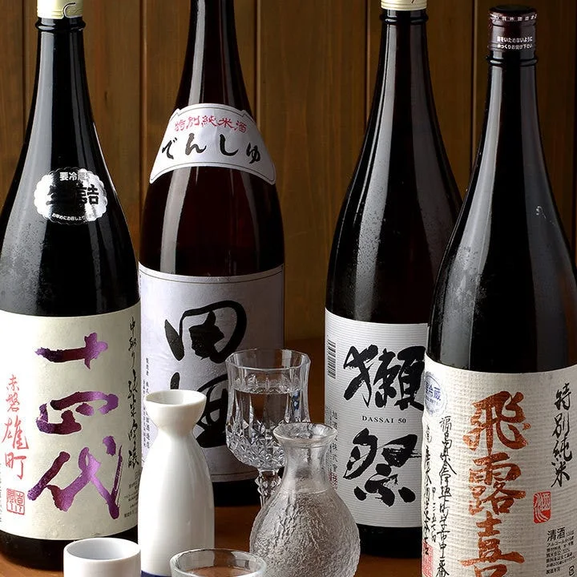
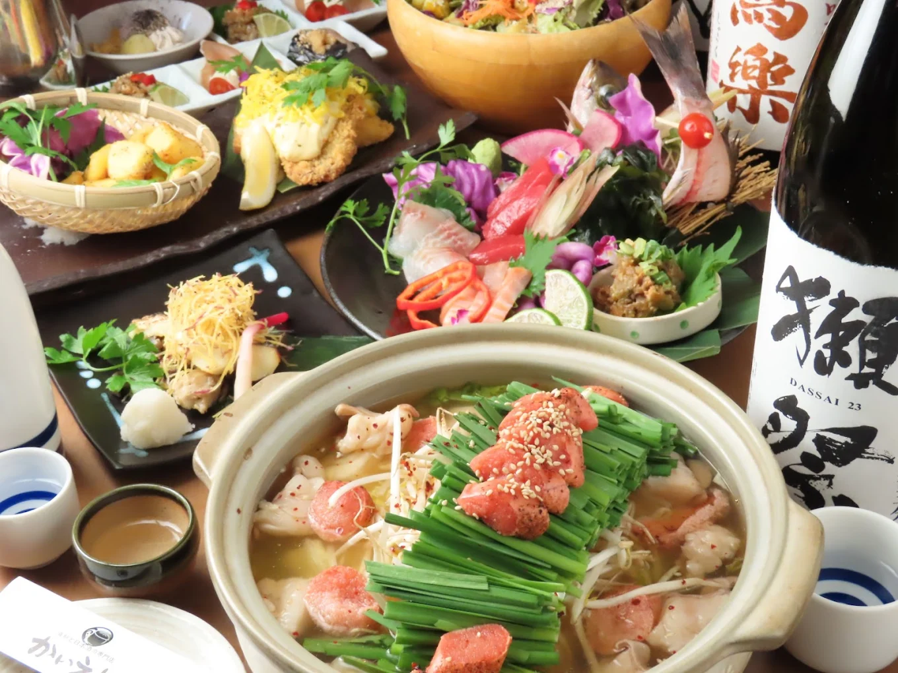
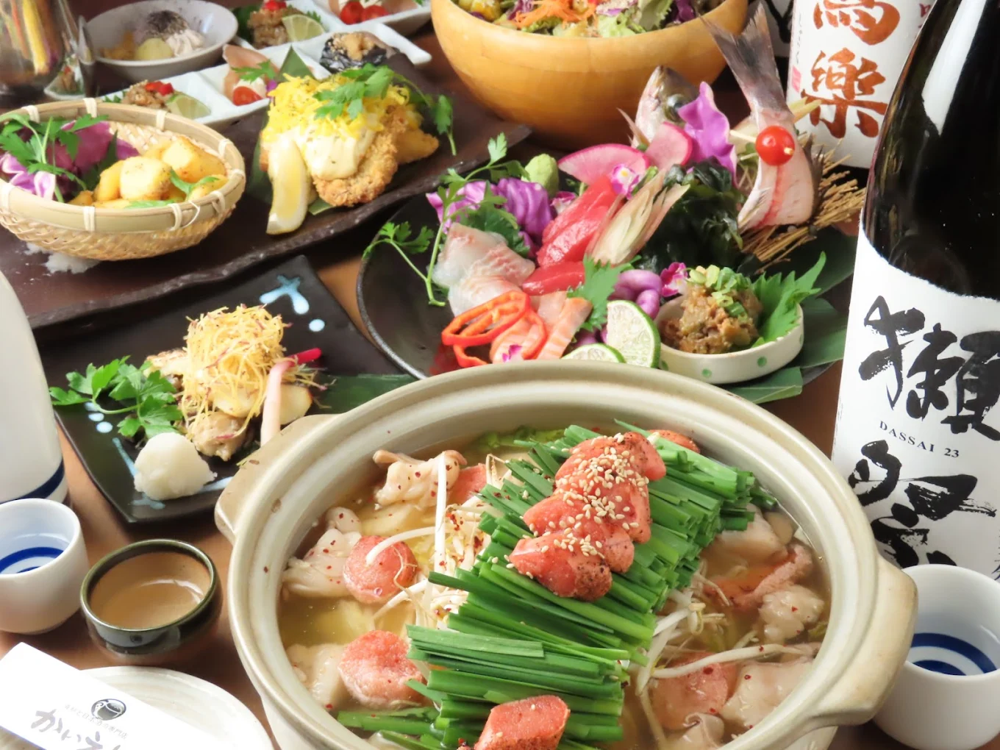
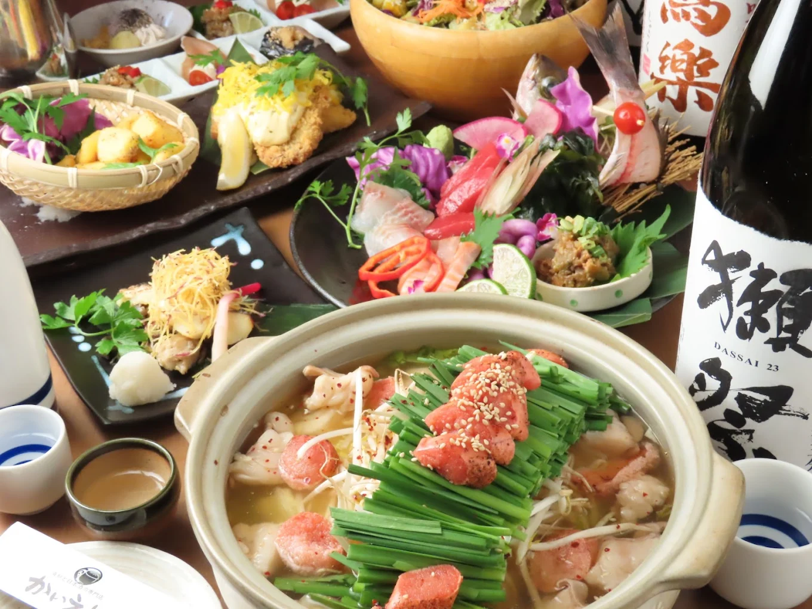

「かいえん」（要予約）
名古屋市北区山田
※JR・瀬戸線・名城線-大曽根駅から徒歩5分

 


Googleマップの評価「星４.０」
日本各地の色んな日本酒が飲み放題の居酒屋
和食と日本酒がテーマの居酒屋で、特に日本酒の種類やメニューはかなり多い。
一押しなのは飲み放題メニューの中の日本酒飲み放題コースであり、何十種類のもの日本酒をセルフのドリンクサーバー感覚で選べるコースとなっている。日本酒が好きな人にはたまらないお店であり、ふらっと行きたくなってもだいたい満席になっているので足を運ぶ際には予約をしておくことをおすすめする。
ちなみに、かいえんが入っている建物のビルには「うりずん」やその他の居酒屋などが入っている。飲み足りない場合はビルの制覇を目指しても良いだろう。
「店舗所在地」
| 住所 | 〒462-0810 愛知県名古屋市北区山田１丁目４−５２ ジェイグロウス大曽根 ５Ｆ |
|---|---|
| TEL | 052-908-4004 |
| URL | hotpepper.jp |